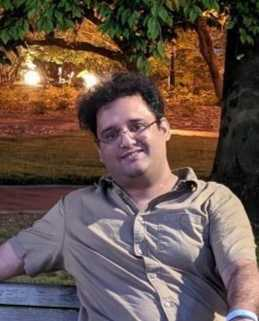

Generative models for antibody design
I work on finetuning diffusion models for antibody CDR design using Reinforcment Learning. More Specifically, use policy gradient methods to finetune discrete time diffusion models.

Machine learning researcher, UNC Charlotte
I build methods that move probability mass where it should go: optimal transport for comparing and aligning datasets, and finetuned diffusion models that steer protein generation toward better antibodies.
I work on finetuning diffusion models for antibody CDR design using Reinforcment Learning. More Specifically, use policy gradient methods to finetune discrete time diffusion models.
My PhD work at the University of Delaware used partial, neural and sliced optimal transport to select subsets, align distributions, and find where two datasets disagree under covariate shift.
Before machine learning, I worked on Lyapunov and optimal control of quantum gates and open quantum systems.
Neural Optimal Transport for Subset Alignment
Under review
Finding Landmarks of Covariate Shift with Kernel Landmark Sliced Wasserstein Distance
Submitted to TMLR
Distributional Landmark for Detecting Multi-Mode Discrepancies
Under review
Optimal Transport with Frequency Warping for Bags of Spectra
IEEE International Workshop on Machine Learning for Signal Processing (MLSP)
Partial Optimal Transport for Support Subset Selection
Transactions on Machine Learning Research
Kernel Landmarks: An Empirical Statistical Approach to Detect Covariate Shift
NeurIPS Workshop on Distribution Shifts
Optimal Control Methods for Quantum Gate Preparation: A Comparative Study
Quantum Information Processing
Lyapunov Based Control for One Qubit Quantum Gates in Coherence Vector Formulation
Chinese Control Conference
Lyapunov-Based Feedback Control of Two-Level Stochastic Open Quantum Systems
IEEE CIS-RAM
Full details are in my CV.